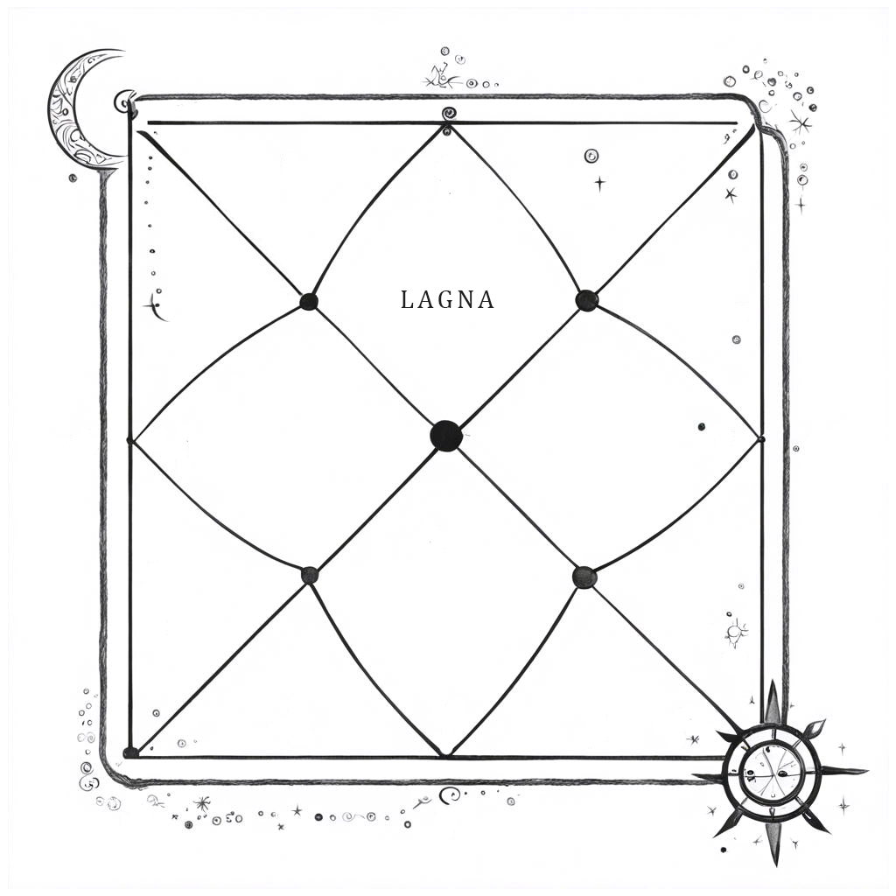

Как разбор карты ребенка может изменить вашу жизнь?
Рождение ребенка - это всегда большая ответственность и часто -
большое
счастье.
И чем ответственнее родитель, тем более он обеспокоен тем, какие усилия и в каком
направлении ему стоит предпринять, чтобы помочь ребенку вырасти максимально здоровым и
реализоваться лучшим образом.
Мы рождаемся в разных семьях, разных странах и в разных
условиях,
но вопросы всех родителей большей частью будут повторяться:
- почему ему не интересно дружить с другими?
- откуда взялись его черты характера, на кого он похож?
- вкладываться ли в его высшее образование? в какие кружки отдать?
- какими он видит маму, папу, чем он похож на них и чем отличается?
- как должна измениться жизнь родителей и какие задачи встанут перед ними?
- почему при внешнем благополучии ребенок постоянно хандрит и недомогает?
- учить ребенка "как правильно" или дать ему свободно самопроявляться?
- почему при внешнем благополучии ребенок постоянно хандрит и недомогает?
- уделять ли внимание сильным сторонам или наоборот больше внимания уделить
слабостям?
а если ребенок только родился, с какими качествами он пришел,
почему в род пришел именно такой ребенок и какие силы рода его поддерживают?

расчетах и законах подобия систем. Она содержит
много скрытого символизма и связей с различными науками,
в том числе с нейрофизиологией.
Каждая планета связана с определенной структурой мозга.
Используя анализ этих грах в карте,
мы можем создать представление о человеке перед
нами,
его когнитивных особенностях,
тенденциях
его поведения
и о развитии его образовательного пути.
Разбор натальной карты - это чрезвычайно увлекательное исследование, которое мы проведем вместе. Оно позволит вам взглянуть на себя с новой стороны, понять как ребенок изменит вашу жизнь, как лучше наладить с ним контакт, а также глубже узнать вашего ребенка и улучшить его физическое, когнитивное и эмоциональное развитие.
Какие аспекты детского гороскопа разберем
Натальная карта джйотиш
Натальная карта (Раси) это схема расположения планет и узлов в 12 домах. Каждый дом отвечает за определенную сферу нашей жизни.
Планеты, располагаясь в разных домах и комбинациях, образуют уникальный рисунок, анализируя который можно сделать выводы о наиболее сильных тенденциях, характерных для хозяина натальной карты.
Для составления натальной карты необходимо знать точное время рождения.
Лагна
Лагну ребенка нужно беречь. Лагна - показывает условия, связанные со здоровьем и силой личности, ее показатели нужно учитывать, когда вы ищете способ привести ребенка в состояние стабильности, защищенности, чтобы он ощущал почву под ногами, был здоров.
(На санскрите लग्न, IAST: Lagna) происходит от корня «лаг», что означает: «прикрепленный к чему-либо, соединенный с чем-либо». "Лагна" или "восходящий знак" в ведической астрологии – это точка зодиака, восходящая на восточном горизонте в момент рождения (первого вдоха ребенка). Именно с восходящего знака в восточной астрологии начинается анализ гороскопа.
Лагна (асцендент) в натальной карте всегда располагается в первом доме.
Лагнеш как движущая сила личности

Сила лагнеша покажет силу личности, покажет основное направление судьбы и чем человек будет интересоваться в жизни больше всего.
Фокус восприятия и его фильтры
Скорость формирования установок влияет на приспособляемость человека к обстоятельствам, его адаптацию в меняющихся условиях, умение быстро налаживать контакт с новыми людьми, усидчивость.
Понимание этой темы позволит понять, с каким ребенком вы имеете дело. Как ваш ребенок обрабатывает информацию, призмы его восприятия, насколько устойчива его концентрация, а также степень его внушаемости.
Модель мышления
Скорость формирования суждений, сложности в учебе, как с ними справляться. Какие темы ребенку будет интересно обсуждать, о чем он будет задавать вопросы.
Наиболее продуктивная модель обучения. Как помочь ребенку раскрыть его способности.
Выбор образования
Этап выбора профессионального обучения, специализация, индивидуальный выбор человека. Еще один фильтр, который помогает человеку сузить поле экспериментов до наиболее интересного и перспективного по его мнению.
дополнительно оцениваем влияние родителей на выбор а также насколько выбранное образование будет соотноситься с дальнейшей профессиональной деятельностью.
Родовой контекст
Родовая сила, накопленный предками опыт. Отношения с родом. Защита рода. Ценности и родовые программы.
Таланты, поддержка рода
Поддерживающая энергия рода. То, что человеку будет даваться легко а также тенденции, не характерные для рода, вызывающие сопротивление
Через какие качества и сферы жизни человек будет раскрывать таланты.
Связь с родителями
Связи и репликация в картах родителей и детей. Какие качества ребенок переймет от мамы или папы.
Мама, ее воспитание, женские энергии рода.
Отец как первый учитель в жизни, духовный стержень, статус.
Как ребенок изменит жизнь родителей.
Ребенок меняет вашу жизнь и иногда самым крутым образом. Узнайте, какие тенденции появятся в вашей жизни после рождения ребенка.
Чему придется научиться маме, папе, как развивать себя, чтобы помочь ребенку в жизни стать счастливой и гармоничной личностью.
Порядок работы
Нет ограничений, которые бы не позволяли вам заказать расчет, исходя из возраста ребенка. Если ребенок уже рожден, вы можете заказать расчет. Единственное ограничение - это выход из детского возраста: совершеннолетний человек самостоятелен, и сам отвечает за себя, воспитательные обязанности родителя закончены. В остальных случаях вы можете приурочить консультацию как к рождению ребенка - для того, чтобы узнать, что за человек пришел к вам в род, как он изменит жизнь родителей и в чем состоит задача родителя по отношению к этому ребенку, к вступлению в дошкольный возраст - чтобы больше узнать о склонностях вашего ребенка, так и к началу обучения в школе - чтобы понять какая модель обучения будет наиболее продуктивна или ближе к окончанию школы, чтобы понять, какие тенденции имеются у вашего ребенка в плане профессионального образования .
Делать анализ карты ребенка по аналогии с анализом взрослого не
целесообразно,
пока он не
достигнет
возраста 18 лет и не запросит такой анализ самостоятельно. Ребенок не имеет возможности проявить
свободу
воли в такой же мере как и взрослый человек, в силу развития и зависимости от значимых людей. Многие
вещи за него решают родители. Более того, несмотря на кармические тенденции, родители могут повлиять
на
впечатления ребенка и изначально помочь ему обрести более надежную базу в жизни. Что ОЧЕНЬ ВАЖНО -
влияние это невозможно передать только через назидания и советы. Главным будет, что родители сами
демонстрируют своею жизнью и поведением. Поэтому родителям важно понять, кто к ним пришел, какие
качества в себе нужно развить, чтобы ребенок смог на них опереться и поднять род на более высокий
уровень.
Кроме этого перекрестный анализ родительской и детской карты позволяет увидеть параллели в качествах
и
проанализировать, какие таланты ребенок возьмет из отцовского рода, какие из материнского. Также мы
смотрим, какие сложности в понимании друг друга могут возникнуть.
Для составления карты время является необходимым. Разброс вариантов слишком широк. В таких случаях требуется ректификация времени рождения, что является отдельной услугой (карта сопоставляется с событиями жизни такими как брак и рождение ребенка, например), но и в этом случае требуется знать хотя бы примерное время и уточнять его в диапазоне двух часов.
Безусловно, люди, рожденные в одно время в одном месте, будут иметь сходные качества, однако даже близнецы рождаются по очереди и их дробные карты будут отличаться. Один из них, часто это первый ребенок, более сильный, более активный. Живя в одном пространстве, они так или иначе вынуждены конкурировать за внимание родителей, и лучшая стратегия - использовать разные методы конкуренции. Поэтому логично,что один из детей будет выбирать стратегии, отличные от стратегий брата/сестры.
Расчет карты, анализ и консультация проводятся только по 100% предоплате. Составление карты делается моментально, если нет сомнений во времени, но перекрестный анализ - это творческий и трудоемкий процесс. Если вы оплатили, но у вас возникли критические обстоятельства, требующие остановки процесса, вы можете связаться со мной, и, если гороскоп еще не в работе, мы решим вопрос.
Пожалуйста, убедитесь, что данные для расчетов верны до того как их отправить. Также прочитайте чего можно ожидать от детского гороскопа и чего ожидать не стоит. Например, здесь мы не рассматриваем медицинскую проблематику карты, не прогнозируем брак и детей этому ребенку. Задача детского гороскопа здесь - это проанализировать качества, тенденции, которые будут влиять на образование и профессию, а также связи ребенка с родителями и перемены в их жизни в связи с приходом нового члена семьи. Вы всегда можете попросить разъяснения, если какой-то из пунктов кажется вам не очень понятным. Астрология - очень древняя наука, построенная на математических расчетах и наблюдениях за влиянием планет в солнечной системе. Вы не получите гарантии, что ваш ребенок обязательно станет известным художником. Но будет видно, есть ли в его карте такие предпосылки и что ему поможет раскрыть эти качества наилучшим образом и сделать такое будущее более вероятным. Будьте готовы, что прежде всего придется поработать над собой).
Вероятно ранее вы сталкивались с западной, солярной астрологией. Индийская астрология (Джйотиш) построена на основе лунного знака по дате рождения. Оба светила оказывают на нас влияние, но, согласно джйотиш, луна более полно раскрывает личность человека, а солнце описывает часть его внешней реализации. Влияние остальных планет делает вашу личность еще более объемной.
Если вы не нашли какой-то информации, воспользуйтесь кнопками в левом нижнем углу сайта, чтобы перейти в телеграм или отправить вопрос через форму. Ознакомьтесь с проектами - если ваш вопрос подходит под какой-то проект, напишите в личку (укажите проект, ваш вопрос, точные подробные данные рождения и ваше имя). Информация общего характера по данным проектам будет появляться в постах со временем, когда накопится достаточно анкет, в отдельных случаях это может быть краткий личный ответ.
Важным условием продуктивной консультации является личный запрос клиента. Поэтому убедитесь, пожалуйста, что одариваемый имеет активный запрос на консультацию, ознакомлен с условиями и готов уделить время в ближайшие месяц-два. Бланк сертификата можно скачать на сайте.
Для заказа расшифровки собственной натальной карты рождения напишите в телеграм.
ОПЛАТА
Стоимость услуги 5000 руб.
Ссылка на оплату придет вместе с подтверждением о получении вашей заявки и данных.
Анализ требует определенной затраты времени и проводится после 100% предоплаты.
Пожалуйста, будьте внимательны: перед оплатой ознакомьтесь с пользовательским соглашением и убедитесь, что внесенные вами данные о рождении верны.
Пусть потенциал вашего ребенка раскроется наилучшим образом!